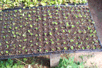
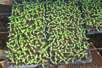
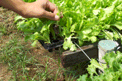

|
1º PASO * Coloque la tierra o el sustrato en los plugs o almácigos. * Luego coloque una sola semilla en cada celda, y cubra levemente las semillas con tierra. * Luego del paso anterior y por única vez se recomienda usar algún funguicida para que no se produzca lo que comúnmente se llama el mal del almácigo (una cubierta de hongo y humedad que impide el desarrollo de la planta por falta de aireación y pudriendo la semilla) * En caso de que por accidente cayeran dos o más semillas, se debe eliminar las más pequeña una vez germinada para dejar crecer la más fuerte. |
|
2º PASO El secreto de obtener un buen cultivo pasar por una tener una buena germinación. El motivo de hacerlas germinar previamente en un plug o almácigo es para controlar más de cerca la humedad necesaria de cada semilla.  |
|
3º PASO Acá observamos una etapa más avanzada del desarrollo del plantín. En este caso de tomate. |
|
4º PASO En esta etapa de la germinación recomendamos agregar en cada celda un gránulo de NITROFOSKA® AZUL lo más alejado posible del tallo del plantín. Esto es para darle más Nitrógeno, Fósforo, Potasio, Magnesio, Calcio y Azufre para el mejor desarrollo de la planta  |
|
5º PASO Generalmente el trasplante a tierra del plantín se realiza cuando éste tiene entre 4 y 6 hojas, como vemos en las fotos, ya el plantín se encueDescripción: Descripción: Descripción: Descripción: C:\Users\User\Desktop\ecoproductos2017\27 copia.gifntra desarrollado y enraizado, listo para pasar a tierra. Muy importante: cuando repiquemos o pasemos los plantines a tierra darles la debida distancia entre planta y planta para su mejor desarrollo. Retirar el plantín con cuidado para que salga entero, tal como lo vemos en la foto.  |